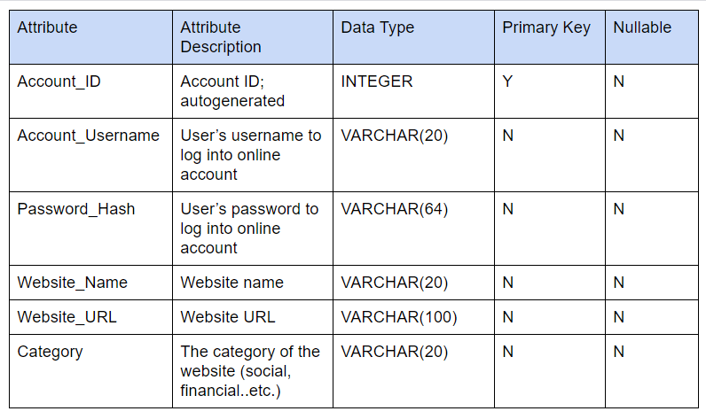
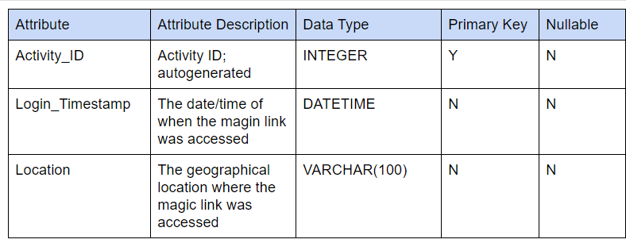
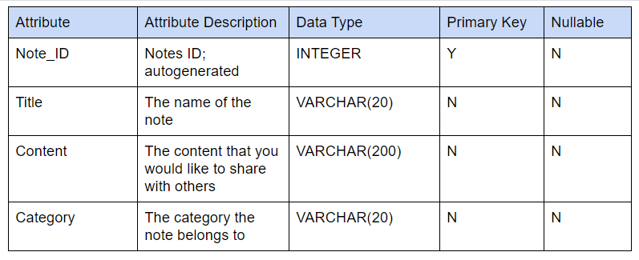
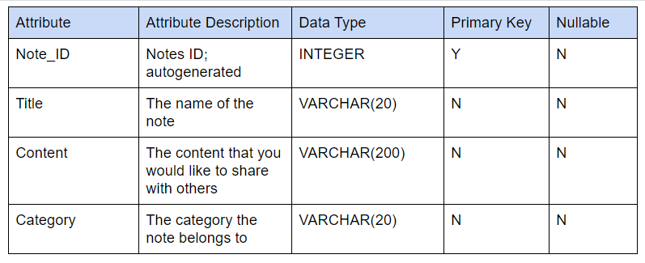
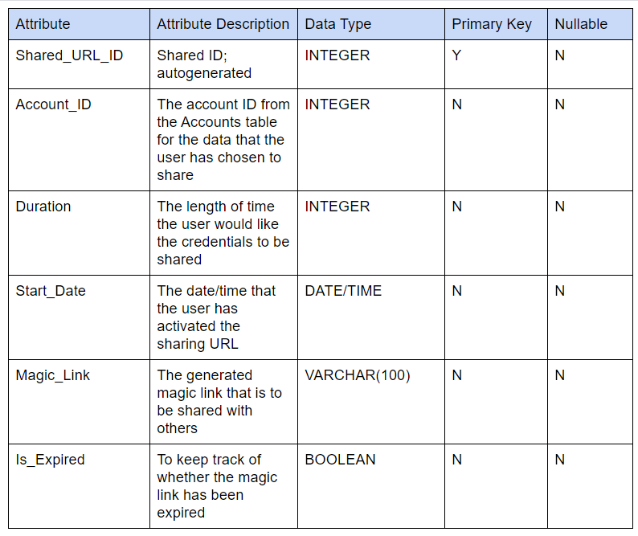
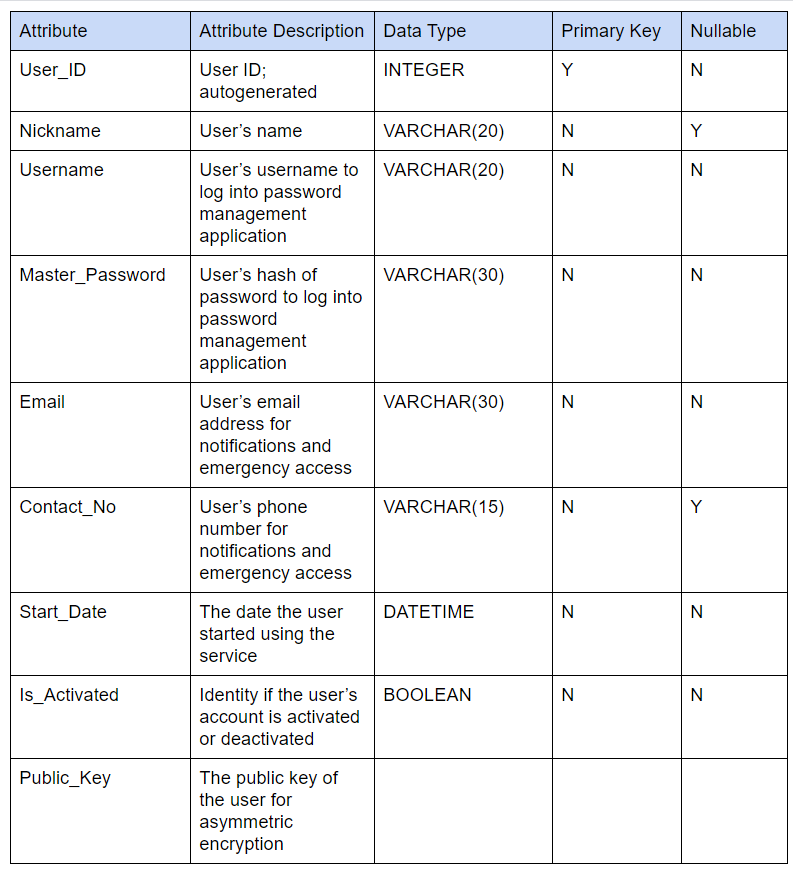
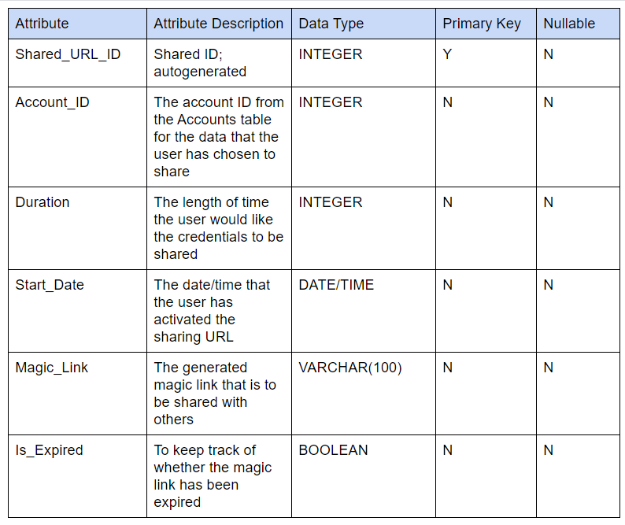
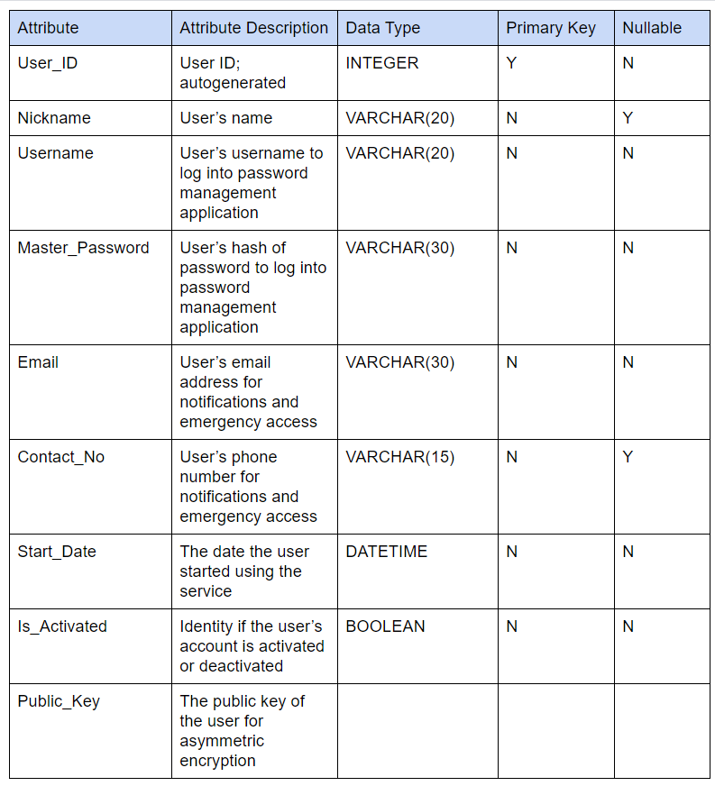

Passwords and login information are not only a common part of most people’s everyday life, but they also control access to some of the most important aspects of it, such as banking and finances, medical services, social media, and other sensitive personal information. You may have heard that passwords should be kept secret and never shared. However, the reality is that password sharing is more common than we think. Have you ever shared a video streaming account like Netflix or Hulu? Managed joint banking accounts? Shared shopping accounts like Amazon? Or shared Google drive or Dropbox for photos with family members? There are countless scenarios where we might need to share passwords with spouses, family, friends, coworkers, and caretakers, etc.
Sending passwords via text messages or email isn’t a best practice because plain text can be intercepted, or easily found in the messages, inbox or sent folder. Passwords written on a piece of paper are hard to keep track of, are easily lost, and aren’t secure when left on desktops, pinned to bulletin boards or taped to monitors. There are also existing password management solutions that have password sharing capabilities, but the added complexity of additional features makes the point of entry seem intimidating. Thus, Beam is a password management and sharing website that is simple to use and helps users share passwords effortlessly and securely.
  

 


